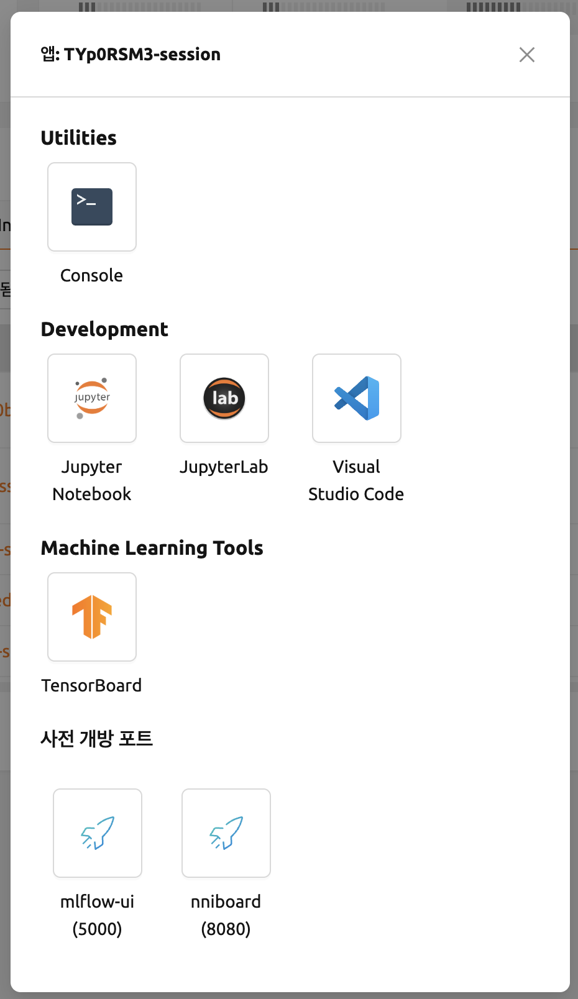
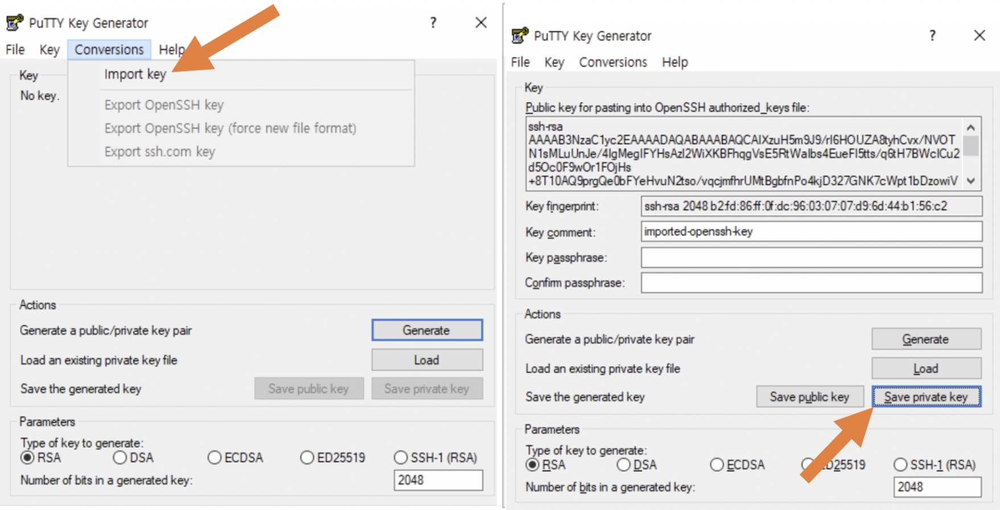
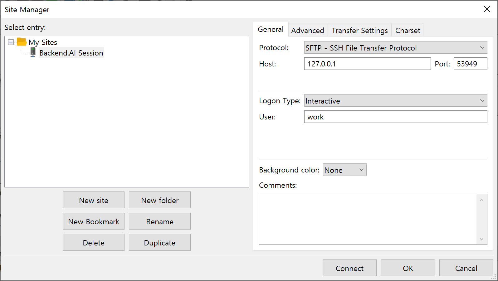
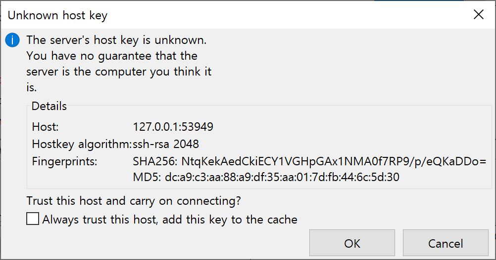
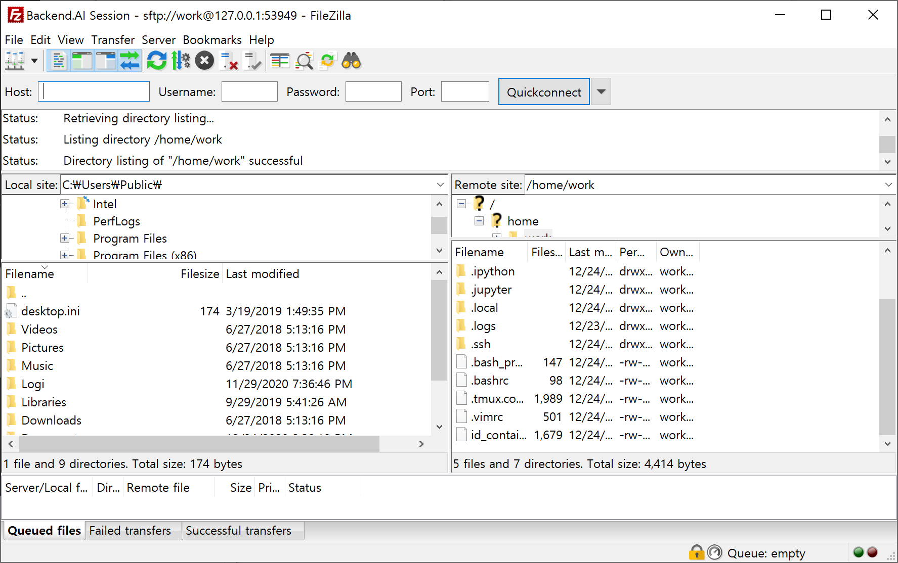
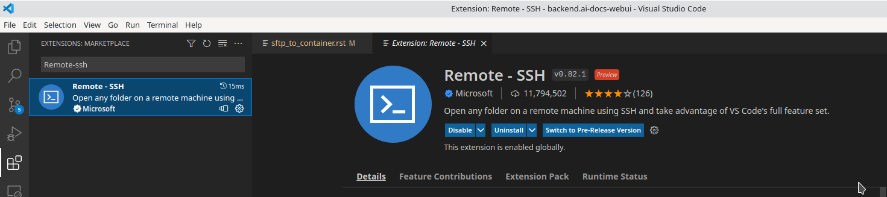
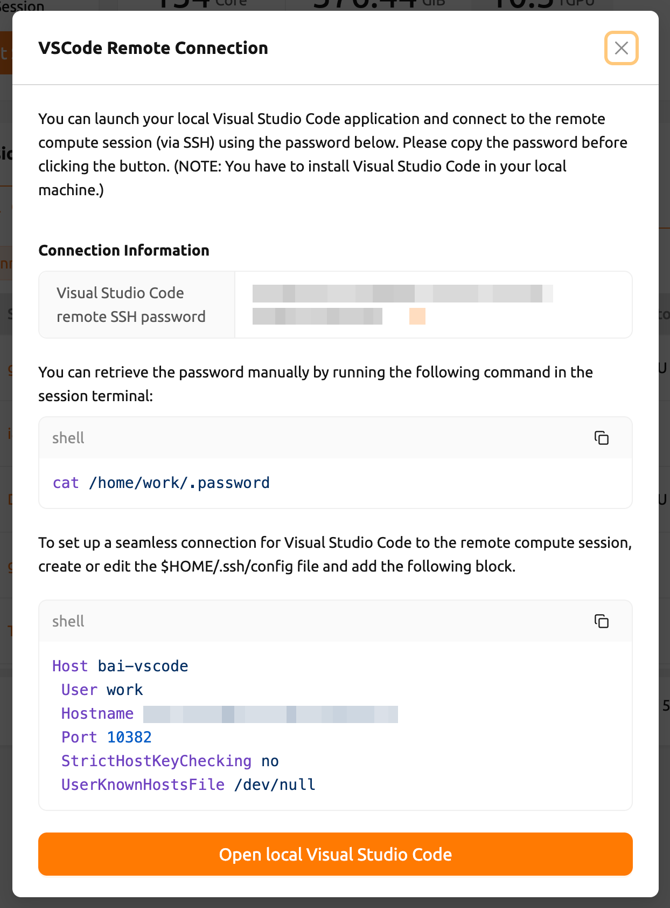

연산 세션에 SSH/SFTP 접속하기#
Backend.AI는 생성된 연산 세션(컨테이너)에 SSH/SFTP 접속을 지원합니다. 이번 절에서는 그 방법을 알아봅니다.
Linux / Mac 환경#
먼저 연산 세션을 하나 생성한 후 Control의 앱 아이콘(첫 번째 버튼)을 클릭하고 SSH / SFTP 아이콘을 클릭합니다. 그러면 컨테이너 내부에서 SSH/SFTP 접속을 받는 데몬(daemon)이 실행되고, 로컬 proxy를 통해 WebUI 앱과 컨테이너 내부의 데몬이 연결됩니다.
이 아이콘을 클릭하기 전에는 해당 세션에 SSH/SFTP 접속을 할 수 없습니다. WebUI 앱을 껐다가 다시 켜면 로컬 proxy와 WebUI 앱 사이의 연결이 초기화되므로 SSH/SFTP 아이콘을 다시 한 번 클릭해야 합니다.
다음으로 SSH/SFTP 접속 정보가 담긴 대화상자가 팝업됩니다. 이 대화상자에는 접속에 사용할 사용자, 호스트, 포트 값과 바로 사용할 수 있는 sftp, scp, rsync 예시 명령, 그리고 id_container 파일을 로컬 머신에 저장하는 SSH 키 다운로드 버튼이 표시됩니다. 이 파일은 자동으로 생성된 SSH 개인 키입니다. 버튼을 쓰는 대신 웹 터미널이나 Jupyter Notebook을 통해 이 파일을 직접 다운로드해도 됩니다. id_container 파일은 /home/work/ 아래에 있습니다. 자동 생성된 SSH 키는 새 세션이 생성되면 바뀔 수 있으며, 그 경우 다시 다운로드해야 합니다.


접속 주소는 항상 이 대화상자의 호스트와 포트 필드에서 확인하세요. 이 값은 Backend.AI를 사용하는 방식에 따라 달라집니다. 접속 정보를 확인할 수 없는 경우 대화상자 자체가 열리지 않고 오류 알림으로 그 이유를 안내합니다. 접속 오류 절을 참고하세요.
다운로드한 SSH 개인 키로 연산 세션에 SSH 접속하려면 쉘 환경에서 다음 명령을 실행합니다. -i 옵션 뒤에 다운로드한 id_container 파일의 경로를, -p 옵션 뒤에 대화상자에 표시된 포트 번호를 입력하고, 대화상자에 표시된 호스트를 접속 주소로 사용합니다. 연산 세션 내부의 사용자 계정은 보통 work으로 설정되어 있지만, 세션이 다른 계정을 사용한다면 work@<호스트>에서 work 부분을 실제 세션 계정으로 바꿔야 합니다. 명령을 올바르게 실행하면 연산 세션에 SSH 접속이 이루어지고 컨테이너의 쉘 환경이 표시됩니다. 아래 예시의 호스트와 포트는 실제 대화상자에 표시된 호스트와 포트로 바꿔서 사용하세요.
ssh -i ~/.ssh/id_container -p 30722 -o StrictHostKeyChecking=no -o UserKnownHostsFile=/dev/null work@127.0.0.1
Warning: Permanently added '[127.0.0.1]:30722' (RSA) to the list of known hosts.
f310e8dbce83:~$SFTP로 접속하는 방법도 거의 동일합니다. SFTP 클라이언트를 실행한 후 공개 키 기반 접속 방식을 설정하고, SSH 개인 키로 id_container를 지정합니다. FTP 클라이언트마다 설정 방법이 다르므로 자세한 내용은 해당 FTP 클라이언트의 매뉴얼을 참고하세요.
SSH/SFTP 접속 포트 번호는 세션이 생성될 때마다 무작위로 할당됩니다. 특정 SSH/SFTP 포트 번호를 쓰려면 사용자 설정 메뉴의 "선호하는 SSH 포트" 필드에 원하는 포트 번호를 입력하면 됩니다. 연산 세션 내의 다른 서비스와 충돌하지 않도록 10000-65000 사이의 포트 번호를 지정하는 것이 좋습니다. 단, 두 개 이상의 연산 세션에서 동시에 SSH/SFTP 접속을 하면 두 번째 SSH/SFTP 접속은 지정된 포트를 쓸 수 없어(첫 번째 SSH/SFTP 접속이 이미 그 포트를 사용 중이므로) 무작위 포트 번호가 할당됩니다.
id_container 대신 자체 SSH 키페어를 쓰려면 .ssh라는 이름의 사용자 타입 폴더를 생성합니다. 그 폴더에 authorized_keys 파일을 만들고 SSH 공개 키의 내용을 추가하면, 연산 세션 생성 후 id_container를 다운로드하지 않고도 자체 SSH 개인 키로 SSH/SFTP 접속을 할 수 있습니다.
다음과 같은 경고 메시지가 표시되면 id_container의 퍼미션을 600으로 변경한 후 다시 시도하세요. (chmod 600 <id_container 경로>)

접속 오류#
SSH/SFTP 접속 정보는 세션이 실행 중인 자원 그룹의 App Proxy를 통해 확인합니다. 이 단계가 실패하면 접속 대화상자가 열리지 않고, 대신 그 이유를 알리는 알림이 표시됩니다. 메시지를 보면 어느 단계에서 실패했는지 알 수 있습니다.
- 프록시 서버가 아직 준비되지 않았습니다. 프록시 설정을 확인하세요.: WebUI가 App Proxy에 접근하지 못했거나, proxy가 접속 정보를 반환하지 않은 경우입니다. proxy가 아직 기동 중일 수 있으므로 몇 초 기다린 후 SSH/SFTP 아이콘을 다시 클릭해 보세요. 메시지가 계속 표시된다면 사용자 머신에서 App Proxy에 접근할 수 없는 상태입니다. 예를 들어 방화벽이 차단했거나, WebUI와 다른 프로토콜로 서비스되고 있을 수 있습니다. 관리자에게 해당 자원 그룹의 App Proxy 서버 주소 확인을 요청하세요.
- 프록시 직접 TCP 연결은 아직 지원되지 않습니다.: App Proxy가 응답했지만, SSH/SFTP에 필요한 직접 TCP 연결을 제공하지 않는 경우입니다. 같은 세션에서 Jupyter Notebook, 터미널 등 웹 기반 앱은 정상적으로 사용할 수 있습니다. 관리자에게 해당 자원 그룹에서 TCP를 지원하는 App Proxy를 활성화하도록 요청하세요.
- 유효하지 않은 URL로 인해 앱을 실행할 수 없습니다.: App Proxy가 WebUI에서 해석할 수 없는 주소를 반환한 경우입니다. SSH/SFTP 아이콘을 다시 클릭해 보고, 메시지가 계속 표시되면 세션이 속한 자원 그룹 이름과 함께 관리자에게 알리세요.
Windows / FileZilla 환경#
Backend.AI WebUI 앱은 OpenSSH 기반 공개 키 접속(RSA2048)을 지원합니다. Windows에서 PuTTY와 같은 클라이언트로 접속하려면 PuTTYgen과 같은 프로그램으로 개인 키를 ppk 파일로 변환해야 합니다. 변환 방법은 다음 링크를 참고하세요: https://wiki.filezilla-project.org/Howto. 이 절에서는 Windows에서 FileZilla 클라이언트로 SFTP에 접속하는 방법을 설명합니다.
Linux/Mac에서의 접속 방법을 참고하여, 연산 세션을 생성하고 접속 포트를 확인한 후 id_container를 다운로드합니다. id_container는 OpenSSH 기반 키이므로, Windows 전용이거나 ppk 타입 키만 지원하는 클라이언트를 쓴다면 변환이 필요합니다. 여기서는 PuTTY와 함께 설치되는 PuTTYgen 프로그램으로 변환합니다. PuTTYgen을 실행한 후 Conversions 메뉴에서 import key를 클릭합니다. 파일 열기 대화상자에서 다운로드한 id_container 파일을 선택합니다. PuTTYgen의 Save private key 버튼을 클릭하고 파일을 id_container.ppk라는 이름으로 저장합니다.

FileZilla 클라이언트를 실행한 후, 설정-연결-SFTP로 이동하여 키 파일 id_container.ppk(OpenSSH를 지원하는 클라이언트의 경우 id_container)를 등록합니다.

사이트 관리자를 열고, 새 사이트를 생성한 후 다음과 같이 접속 정보를 입력합니다.

컨테이너에 처음 접속할 때 다음과 같은 확인 팝업이 나타날 수 있습니다. OK 버튼을 클릭하여 호스트 키를 저장합니다.

잠시 후 다음과 같이 접속이 완료된 것을 확인할 수 있습니다. 이 SFTP 접속을 통해 /home/work/ 또는 마운트된 스토리지 폴더로 대용량 파일을 전송합니다.

Visual Studio Code 환경#
Backend.AI는 연산 세션에 대한 SSH/SFTP 접속을 통해 로컬 Visual Studio Code로 개발하는 것을 지원합니다. 접속이 완료되면 연산 세션의 어디에 있는 파일과 폴더든 자유롭게 작업합니다. 이 절에서는 그 방법을 알아봅니다.
먼저 Visual Studio Code와 Remote Development 확장 팩을 설치해야 합니다.
링크: https://aka.ms/vscode-remote/download/extension

확장을 설치한 후, 연산 세션에 대한 SSH 접속을 설정합니다. VSCode Remote Connection 대화상자에서 복사 아이콘 버튼을 클릭하여 Visual Studio Code 원격 SSH 비밀번호를 복사합니다. 대화상자에 표시된 호스트와 포트 번호도 기억해 둡니다.

그런 다음 SSH config 파일을 설정합니다. ~/.ssh/config 파일(Linux/Mac의 경우) 또는 C:\Users\[사용자 이름]\.ssh\config 파일(Windows의 경우)을 편집하고 다음 블록을 추가합니다. Hostname과 Port 항목에는 대화상자에 표시된 호스트와 포트 번호를 입력합니다. 편의를 위해 호스트 이름을 bai-vscode로 설정합니다. 원하는 별칭으로 바꿔도 됩니다.
Host bai-vscode
User work
Hostname 127.0.0.1
Port 49335
StrictHostKeyChecking no
UserKnownHostsFile /dev/null이제 Visual Studio Code에서 View 메뉴의 Command Palette...를 선택합니다.

Visual Studio Code는 접속하려는 호스트 유형을 자동으로 감지합니다. Remote-SSH: Connect to Host...를 선택합니다.

.ssh/config에 있는 호스트 목록이 표시됩니다. 접속할 호스트를 선택합니다. 여기서는 vscode를 선택합니다.

호스트 이름을 선택하면 원격 연산 세션에 접속됩니다. 접속이 완료되면 빈 창이 표시됩니다. 상태 표시줄에서 접속된 호스트를 항상 확인할 수 있습니다.

이제 평소처럼 File > Open... 또는 File > Open Workspace... 메뉴로 원격 호스트의 폴더나 워크스페이스를 엽니다.

Backend.AI 클라이언트 패키지로 SSH 접속 설정#
이 절에서는 그래픽 사용자 인터페이스(GUI)를 사용할 수 없는 환경에서 연산 세션에 SSH 접속을 설정하는 방법을 설명합니다.
일반적으로 연산 세션(컨테이너)을 실행하는 GPU 노드는 외부에서 직접 접근할 수 없습니다. 따라서 연산 세션에 SSH 또는 SFTP 접속을 하려면, 사용자와 세션을 잇는 터널을 생성하는 로컬 proxy를 실행해야 합니다. Backend.AI Client 패키지를 사용하면 이 과정을 비교적 간단하게 설정합니다.
Backend.AI Client 패키지 준비#
Docker 이미지로 준비#
Backend.AI Client 패키지는 Docker 이미지로 제공됩니다. 다음 명령으로 Docker Hub에서 이미지를 가져옵니다.
docker pull lablup/backend.ai-client
docker pull lablup/backend.ai-client:${VERSION}Backend.AI 서버 버전은 Web UI 우측 상단의 사람 아이콘을 클릭하면 나타나는 "Backend.AI에 대하여" 메뉴에서 확인합니다.

다음 명령으로 Docker 이미지를 실행합니다.
docker run --rm -it lablup/backend.ai-client bash컨테이너에서 backend.ai 명령을 사용할 수 있는지 확인합니다. 사용 가능하면 도움말 메시지가 표시됩니다.
backend.aiPython 가상 환경으로 호스트에서 직접 준비#
Docker를 사용할 수 없거나 사용하지 않으려면 Backend.AI Client 패키지를 호스트 머신에 직접 설치합니다. 사전 요구 사항은 다음과 같습니다.
- 필요한 Python 버전은 Backend.AI Client 버전에 따라 다를 수 있습니다. 호환성 매트릭스는 다음에서 확인하세요: https://github.com/lablup/backend.ai#python-version-compatibility.
clang컴파일러가 필요할 수 있습니다.indygregPython 바이너리를 사용하는 경우zstd패키지가 필요할 수 있습니다.
패키지 설치에는 Python 가상 환경을 사용하는 것이 좋습니다. 한 가지 방법은 indygreg 리포지토리의 정적으로 빌드된 Python 바이너리를 사용하는 것입니다. 다음 페이지에서 로컬 머신 아키텍처에 맞는 바이너리를 다운로드하고 압축을 해제합니다.
https://github.com/indygreg/python-build-standalone/releases
일반적인 x86 기반 Ubuntu 환경을 사용하는 경우, 다음과 같이 다운로드하고 압축을 해제합니다:
bash$ wget https://github.com/indygreg/python-build-standalone/releases/download/20240224/cpython-3.11.8+20240224-x86_64-unknown-linux-gnu-pgo-full.tar.zst $ tar -I unzstd -xvf *.tar.zst
바이너리 압축을 해제하면 현재 디렉토리 아래에 python 디렉토리가 생성됩니다. 다음 명령으로 다운로드한 Python 버전을 확인합니다.
./python/install/bin/python3 -V
Python 3.11.8시스템의 다른 Python 환경에 영향을 주지 않도록 별도의 Python 가상 환경을 생성하는 것이 좋습니다. 다음 명령을 실행하면 .venv 디렉토리 아래에 Python 가상 환경이 생성됩니다.
./python/install/bin/python3 -m venv .venv가상 환경을 활성화합니다. 새 가상 환경이 활성화되었으므로 pip list 명령을 실행하면 pip과 setuptools 패키지만 설치되어 있는 것을 확인할 수 있습니다.
source .venv/bin/activate
(.venv) $ pip list
Package Version
---------- -------
pip 24.0
setuptools 65.5.0이제 Backend.AI Client 패키지를 설치합니다. 서버 버전에 맞는 클라이언트 패키지를 설치합니다. 여기서는 버전이 23.09라고 가정합니다. netifaces 패키지와 관련된 설치 오류가 발생하면 pip과 setuptools의 버전을 낮춰야 할 수 있습니다. backend.ai 명령을 사용할 수 있는지 확인합니다.
(.venv) $ pip install -U pip==24.0 && pip install -U setuptools==65.5.0
(.venv) $ pip install -U backend.ai-client~=23.09
(.venv) $ backend.aiCLI 서버 접속 설정#
.env 파일을 생성하고 다음 내용을 추가합니다. webserver-url에는 브라우저에서 Web UI 서비스에 접속할 때 사용하는 동일한 주소를 입력합니다.
BACKEND_ENDPOINT_TYPE=session
BACKEND_ENDPOINT=<webserver-url>다음 CLI 명령을 실행하여 서버에 접속합니다. 브라우저에서 로그인할 때 사용하는 이메일과 비밀번호를 입력합니다. 정상적으로 완료되면 Login succeeded 메시지가 표시됩니다.
backend.ai login
User ID: myuser@test.com
Password:
✓ Login succeeded.연산 세션에 SSH/SCP 접속#
브라우저에서 데이터를 복사할 폴더를 마운트하여 연산 세션을 생성합니다. CLI로도 세션을 생성할 수 있지만, 편의를 위해 브라우저에서 생성했다고 가정합니다. 생성된 연산 세션의 이름을 기억해 둡니다. 여기서는 ibnFmWim-session이라고 가정합니다.
단순히 SSH 접속만 하려면 다음 명령을 실행합니다.
backend.ai ssh ibnFmWim-session
∙ running a temporary sshd proxy at localhost:9922 ...
work@main1[ibnFmWim-session]:~$SSH 키 파일을 다운로드하고 ssh 명령을 직접 실행하려면, 먼저 다음 명령을 실행하여 로컬 머신에서 연산 세션으로 가는 연결을 중계하는 로컬 proxy 서비스를 시작해야 합니다. -b 옵션으로 로컬 머신에서 사용할 포트(9922)를 지정합니다.
backend.ai app ibnFmWim-session sshd -b 9922
∙ A local proxy to the application "sshd" provided by the session "ibnFmWim-session" is available at:
tcp://127.0.0.1:9922로컬 머신에서 다른 터미널 창을 엽니다. .env 파일이 있는 작업 디렉토리로 이동하고, 연산 세션에서 자동으로 생성된 SSH 키를 다운로드합니다.
source .venv/bin/activate # 다른 터미널이므로 Python 가상 환경을 다시 활성화합니다
backend.ai session download ibnFmWim-session id_container
Downloading files: 3.58kbytes [00:00, 352kbytes/s]
✓ Downloaded to /*/client.다운로드한 키로 다음과 같이 SSH 접속합니다. 로컬 proxy를 포트 9922에서 실행했으므로, 접속 주소는 127.0.0.1, 포트는 9922로 설정합니다. 접속 사용자 계정은 work을 사용합니다.
ssh -o StrictHostKeyChecking=no -o UserKnownHostsFile=/dev/null -i ./id_container -p 9922 work@127.0.0.1
Warning: Permanently added '[127.0.0.1]:9922' (RSA) to the list of known hosts.
work@마찬가지로 scp 명령으로 파일을 복사합니다. 이 경우 세션이 종료된 후에도 파일을 보존하려면 연산 세션 내의 마운트된 폴더에 파일을 복사해야 합니다.
scp -o StrictHostKeyChecking=no -o UserKnownHostsFile=/dev/null -i ./id_container -P 9922 test_file.xlsx work@127.0.0.1:/home/work/myfolder/
Warning: Permanently added '[127.0.0.1]:9922' (RSA) to the list of known hosts.
test_file.xlsx모든 작업이 완료되면 첫 번째 터미널에서 Ctrl-C를 눌러 로컬 proxy 서비스를 종료합니다.